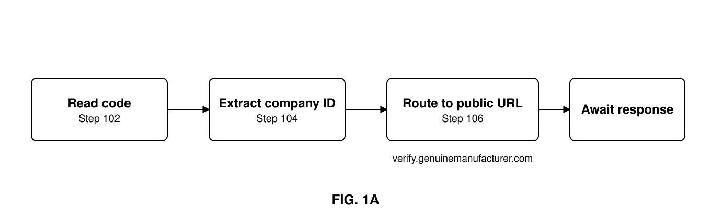
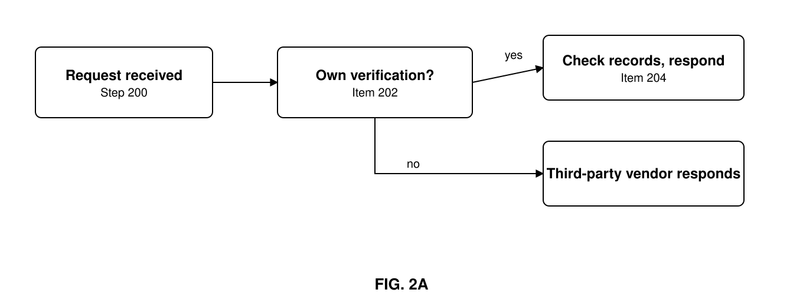

In an anti-counterfeit system and method unique product identifiers or codes are used to identify each unique item manufactured, allowing each single item to be distinguished from all other alike items. Furthermore, the manufacturers of these items provide an electronic verification capability for each unique code they have used to label an item. This invention simply requires these messages to be routed directly to the public website Uniform Resource Locator (URL) domain or subdomain and then to be redirected to either the manufacturer's own electronic verification capability, or, as is more commonly practised, on to their respective third-party service provider — thus providing surety that the verifying party controls both the public-facing URL, and any redirects it then makes, of the product being queried for verification.
The 2014 Drug Supply Chain Security Act (the DSCSA) requires that all pharmaceutical product be uniquely labelled, and that correctly credentialed third parties can verify those labels with the manufacturer during the entirety of a product's lifecycle. As the DSCSA does not stipulate the use of a centralized database, each manufacturer is responsible for verifying their own product. Third-party IT suppliers can be used to manage these verifications for manufacturers.
The problem occurs when a bad actor steps in and claims to be the authorized manufacturer of a product. Their IT service provider may also be a bad actor, in which case there is currently no way to ascertain at scale whether the actual manufacturer is receiving and verifying the verification requests, or whether an imposter has taken their place.
By agreeing to route all messages through the public URL of a manufacturer, the requestor can see that the responder has control of that company's internet presence, and therefore decide whether to trust that response. While this problem has manifested itself in identifying the correct pharmaceutical manufacturer for goods destined for sale in the United States, it is applicable to all uniquely labelled products that require electronic verification of label issuance.
While the implementation of standards in supply-chain labelling has facilitated the rapid adoption of unique labelling technology and brings benefit to supply-chain visibility, it has also offered malicious actors and counterfeiters the capability of understanding the structure of a label and then forward-predicting future codes, even before manufacturers themselves have issued them. Even to the trained eye these codes look genuine. A verification process can be used to check the codes with the original manufacturer to ensure that they were issued, and to record time and location data for every verification so that the manufacturer can flag unusual behaviour and inform the enquiring party not to use that item. This invention generally relates to the systemic problem of correctly identifying a genuine manufacturer from a fake party when the rights to electronically confirm that a product code is good are claimed. The problem occurs in industries where the verification system is not centralized, or where not all manufacturers join the system — allowing bad actors to stake claims for products they do not manufacture, sell those items as genuine, and fake the verification responses of the item.
Certain embodiments of the present invention allow for a publicly known web address to be required in the verification of a product's unique identification codes. That web address, or sub-address, is responsible for redirecting any enquiry to the correct verification service provider or system; but because the address is publicly known and associated with the product, it allows the verifying party to ascertain that the product is being verified by the correct party and not a bad actor.
Figure 1A shows a flow chart of the requesting party's side of one embodiment of an anti-counterfeiting system in accordance with the invention.
Figure 2A is a flow chart showing the responding side of one embodiment of an anti-counterfeiting system in accordance with the invention.
Like reference numbers and designations in the various drawings indicate like elements.


Fig. 1A shows the flow chart for a party initiating an electronic verification request via the public, or modified public, URL of the genuine manufacturer of the product.
Fig. 2A shows a flow chart for the responding side of one embodiment of an anti-counterfeiting system in accordance with the invention.
What is claimed for: